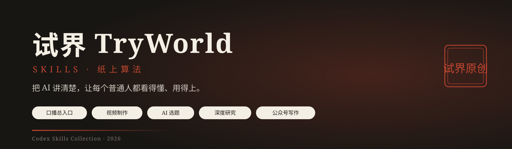

五个技能，一条内容生产线：选题、写稿、出片、深度研究、公众号写作。
每个技能独立可用，合在一起便是一套完整的 AI 口播工作流。
你把需求说成一句话，系统判断直接出片还是先做选题，再自动交付可发布的内容产物与配套材料。
一句人话即可启动；自动识别给稿模式与选题模式，支持子命令、成品去重与交付后邮件通知。
口播稿优化净化、云希配音、HyperFrames 构图渲染，再输出横竖封面、平台标题与字幕；印章全程常驻。
从 AIHOT 最新动态筛选可做选题，附角度、素材原文链接与优先级，并自动避开已生产内容。
纵轴还原事物发展轨迹，横轴比对同类格局，交叉提炼关键洞察，最终输出 PDF 研究报告。
把 PDF、链接、语音转写、简报等素材整理成具备叙事节奏和阅读落点的公众号长文。
flowchart LR
U(["一句话"]) --> P["tryworld-koubo-pipeline"]
P -- "模式 A · 直接给稿" --> A["tryworld-paper-algorithm
优化 → 确认 → 出片"]
P -- "模式 B · 帮我选题" --> S["tryworld-koubo-selection
AIHOT 资讯 → 选题清单"]
S -- "你挑选" --> A
A --> O["成片交付
视频 · 封面 · 标题 · 发布计划"]
O -. "自动" .-> M["邮件通知
产物 + 四平台发布时间"]
口播链路只需记住一个入口：$tryworld-koubo-pipeline。研究型和写作型任务则可独立调用。
| 色 | 值 | 用途 | |
|---|---|---|---|
| 纸面 | #F4EFE4 | 背景主色 | |
| 墨黑 | #1C1916 | 主文字、线条 | |
| 朱红 | #C0452F | 唯一强调色 | |
| 墨水蓝 | #2E5E8C | 次级批注 |
字体：思源宋体 · 霞鹜文楷 · 等宽。动效：墨落纸、笔写入、盖章。
Copy-Item -Path .\skills\* -Destination "$env:USERPROFILE\.codex\skills" -Recurse
cp -r skills/* ~/.agents/skills
安装后直接说：「帮我做一期口播」。